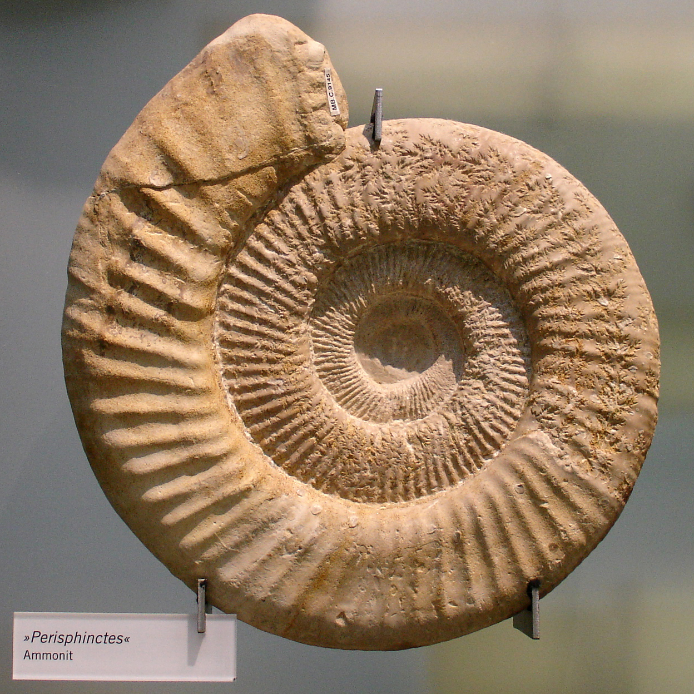

안진영
Jinyoung Ahn
탄생: A.D 1993. 8. 14
서식지: 분당 (현재 서식지: 우정마샹스)
배경: 2012 수능 폭망
발판: 강남양재 대성학원 S2반
학력: 서강대학교 입학 (2013) aka 고졸
전공: 심리학, 경제학, 융합소프트웨어학 (9학기 확정)

탄생: A.D 1993. 8. 14
서식지: 분당 (현재 서식지: 우정마샹스)
배경: 2012 수능 폭망
발판: 강남양재 대성학원 S2반
학력: 서강대학교 입학 (2013) aka 고졸
전공: 심리학, 경제학, 융합소프트웨어학 (9학기 확정)
사람들과 어울리는 것을 좋아하는 성격이며, 사람들과 만나고 소통하는 것에서 에너지를 얻는다. 낯가림이 없으며 다소 철판이다 :)
여행하는 것을 좋아하고, 최근 베트남에 다녀온 후 베트남의 매력에 빠졌다.
어머니께서 어릴때부터 가르칠 수 있는 모든 악기를 다 시켜보셨으나 암모나이트는 흥미가 없는 건 무조건 안하기 때문에 다 그만두었다. 그러다가 중학교 재학시절 드럼에 정착했다.
암모나이트의 특성이 엿보이는 사진들을 모아보았다.
지난주 수요일, 화석 친구들과 함께 개강총회를 즐기는 모습이다.
최근 다녀온 베트남 여행 사진이다. 호이안에서 멋진 팔찌를 발견하고 기뻐하며 찍었다.
중2때부터 간헐적으로 드럼을 쳤다. 초반에는 쉬지 않고 2년정도 쳤지만 이후에는 바쁜 삶으로 인해 간헐적으로 배운 나머지 지금은 이도저도 아닌 실력이 되었다. 가장 최근(일년 전) 연습했던 곡은 Cold Play의 Fix You와 Troy Sivan의 Youth이다.